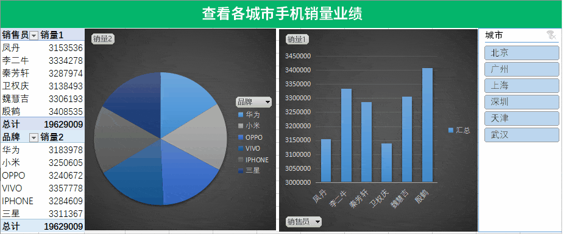

课堂导入
这种动态效果能传达给对方清晰而准确的信息，不管是平时进行数据筛选、分析、统计还是汇 报都是非常实用的展现方式，比摊开一张大表来，效率和观感都好了不知道多少倍！ 这种好用又好看的效果怎么做出来呢？现在就开始和我一起动起来，尝试自己制作一个 高大上的“数据透视表”吧！
这种动态效果能传达给对方清晰而准确的信息，不管是平时进行数据筛选、分析、统计还是汇 报都是非常实用的展现方式，比摊开一张大表来，效率和观感都好了不知道多少倍！ 这种好用又好看的效果怎么做出来呢？现在就开始和我一起动起来，尝试自己制作一个 高大上的“数据透视表”吧！